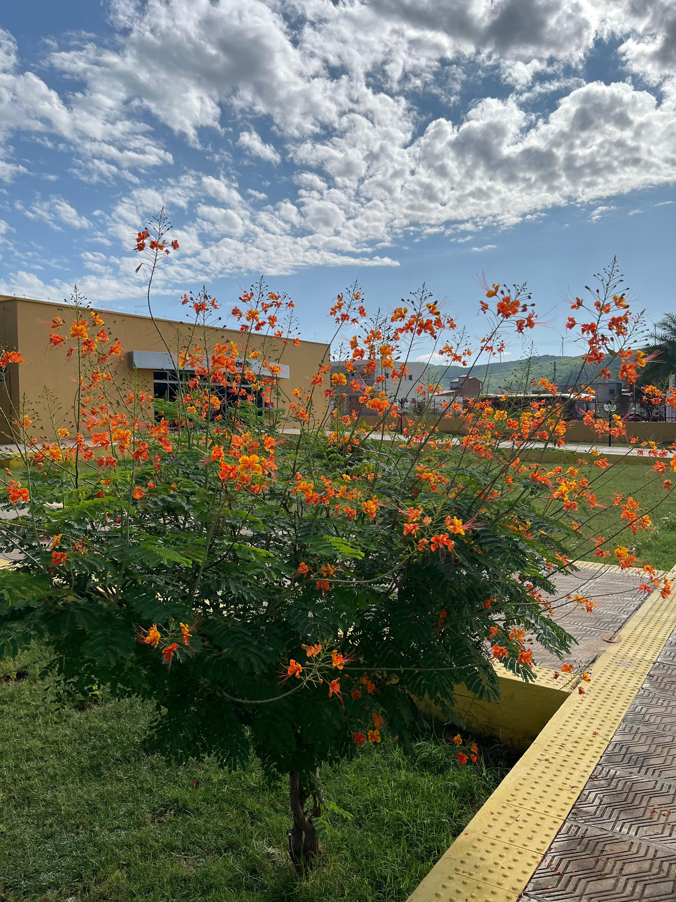
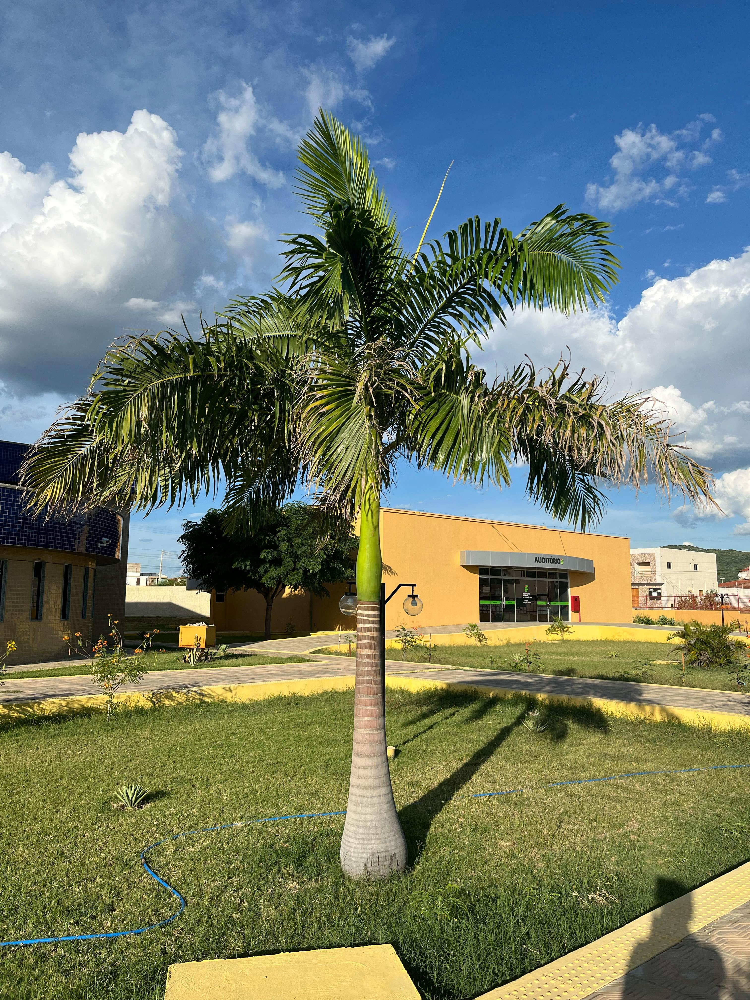

Explore o Jardim dos Minis Flamboyant

Mini Flamboyant
Nome Científico: Caesalpinia pulcherrima
Família Botânica: Fabaceae
Descrição: O Mini Flamboyant se destaca no paisagismo por sua elegância compacta e atributos ornamentais. Seu porte reduzido, combinado com a copa arredondada e a folhagem perene, proporciona um impacto visual impressionante tanto com suas folhas laranjas quanto amarelas.

Planta 6
Nome Científico: Planta Científica 6
Descrição: Ideal para ambientes internos e resistentes à pouca luz...

Planta 7
Nome Científico: Planta Científica 7
Descrição: Planta que adora luz intensa e cresce rapidamente...